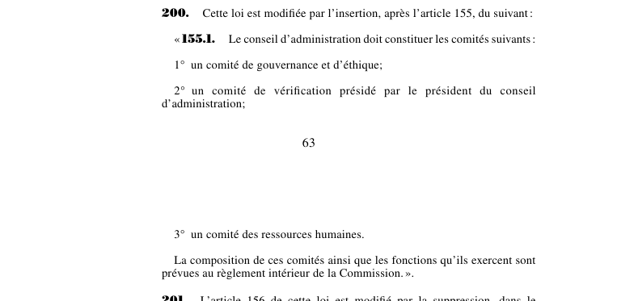

art-200-LMRSST : insertion après art. 155 LSST
Article modificateur de la LMRSST (L.Q. 2021, c. 27).
- Insère un nouvel article dans la Loi sur la santé et la sécurité du travail (RLRQ c. S-2.1).
📄 PDF officiel (page 63) · 🌐 LegisQuébec
Texte officiel : capture du PDF
{kind=link}

Toucher l'image pour l'agrandir🔗 Ouvrir a cette page : LMRSST.pdf : page 63
- Insère un nouvel article dans la Loi sur la santé et la sécurité du travail (RLRQ c. S-2.1), après l'art. 155.
Portée et effet
Adopté dans le cadre de la réforme de 2021 modernisant le régime de santé et de sécurité du travail, l'article 200 de la LMRSST insère une nouvelle disposition dans la LSST, en lien avec art. 155 LSST (remplacé). Le texte en vigueur de la disposition visée intègre désormais cette modification ; le libellé exact figure dans la capture officielle ci-dessus. Le chapitre II de la LMRSST modernise la LSST : mécanismes de prévention et de participation des travailleurs, régime intérimaire et rôles des intervenants en santé et sécurité.
La jurisprudence porte sur la disposition modifiée, art. 155 LSST (remplacé), et non sur l'article modificateur lui-même (les décisions et leurs PDF sont rassemblés sur la page de cet article).
Voir aussi
- 🎯 Article(s) modifié(s) : art. 155 LSST (remplacé) · en cas d'absence ou d'empêchement du président du conseil d'administration, du PDG ou de l'un des vice-présidents, le ministre nomme un remplaçant pour la durée de l'absence ou de l'empêchement.
- 🗓️ Entrée en vigueur : 6 octobre 2021 (voir art. 313 LMRSST)
- 📚 Chapitre : Chap. II : modifications à la LSST
- ↑ Loi : LMRSST
Pages qui pointent ici (1)
- LMRSST : Chapitre II : Modifications à la LSST Recueil législatif